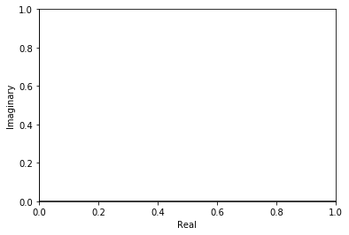
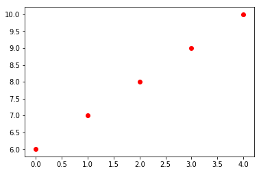
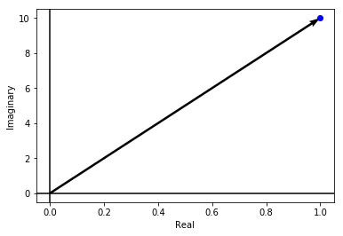
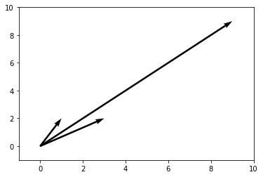

Plotting
%matplotlib inline import matplotlib.pyplot as plt from numpy import * ''' ~~~~~~~~~~~~~~~~~~~~~~~~~~~~~~~~~~~` This draws the axis for argand diagram ~~~~~~~~~~~~~~~~~~~~~~~~~~~~~~~~~~~` ''' r = 1 # Y = [r*exp(1j*theta) for theta in linspace(0,2*pi, 200)] # Y = array(Y) # plt.plot(real(Y), imag(Y), 'r') plt.ylabel('Imaginary') plt.xlabel('Real') plt.axhline(y=0,color='black') plt.axvline(x=0, color='black') def argand(complex_number, vector=False): ''' This function takes a complex number. ''' z = complex_number x = real(y) y = imag(y) plt.plot(x,y, 'bo') if vector: plt.quiver(0,0, x,y) # Draw the hypotenuse # plt.plot(x2,y2, 'r') # Draw the projection on real-axis plt.plot(x, imag(y), 'bo') [argand(r*exp(1j*theta), vector=True) for theta in linspace(0,2*pi,10)] plt.show()
---------------------------------------------------------------------------
UnboundLocalError Traceback (most recent call last)
<ipython-input-40-501b6b9367ed> in <module>()
38 plt.plot(real(y), imag(y), 'bo')
39
---> 40 [argand(r*exp(1j*theta), vector=True) for theta in linspace(0,2*pi,10)]
41 plt.show()
<ipython-input-40-501b6b9367ed> in <listcomp>(.0)
38 plt.plot(real(y), imag(y), 'bo')
39
---> 40 [argand(r*exp(1j*theta), vector=True) for theta in linspace(0,2*pi,10)]
41 plt.show()
<ipython-input-40-501b6b9367ed> in argand(complex_number, vector)
24 '''
25 z = complex_number
---> 26 x = real(y)
27 y = imag(y)
28 plt.plot(x,y, 'bo')
UnboundLocalError: local variable 'y' referenced before assignment

import matplotlib.pyplot as plt import numpy as np cnums = np.arange(5) + 1j * np.arange(6,11) X = [x.real for x in cnums] Y = [x.imag for x in cnums] plt.scatter(X,Y, color='red') plt.show()

a = [0. +6.j, 1. +7.j, 2. +8.j, 3. +9.j, 4.+10.j] for x in a: plt.polar([0,angle(x)],[0,abs(x)],marker='o')

Addition and Substraction¶
import numpy as np import matplotlib.pyplot as plt soa = np.array([[0, 0, 3, 2], [0, 0, 1, 2], [0, 0, 9, 9]]) X, Y, U, V = zip(*soa) plt.figure() ax = plt.gca() ax.quiver(X, Y, U, V, angles='xy', scale_units='xy', scale=1) ax.set_xlim([-1, 10]) ax.set_ylim([-1, 10]) plt.draw() plt.show()
